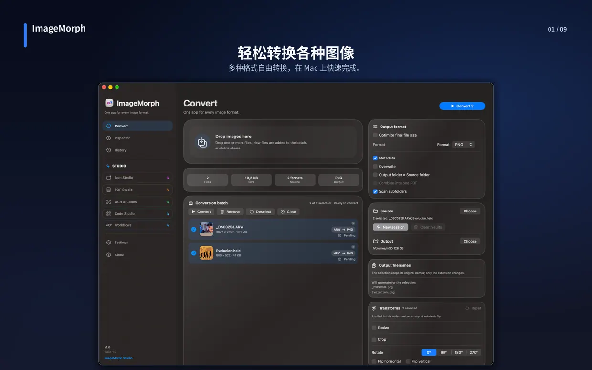
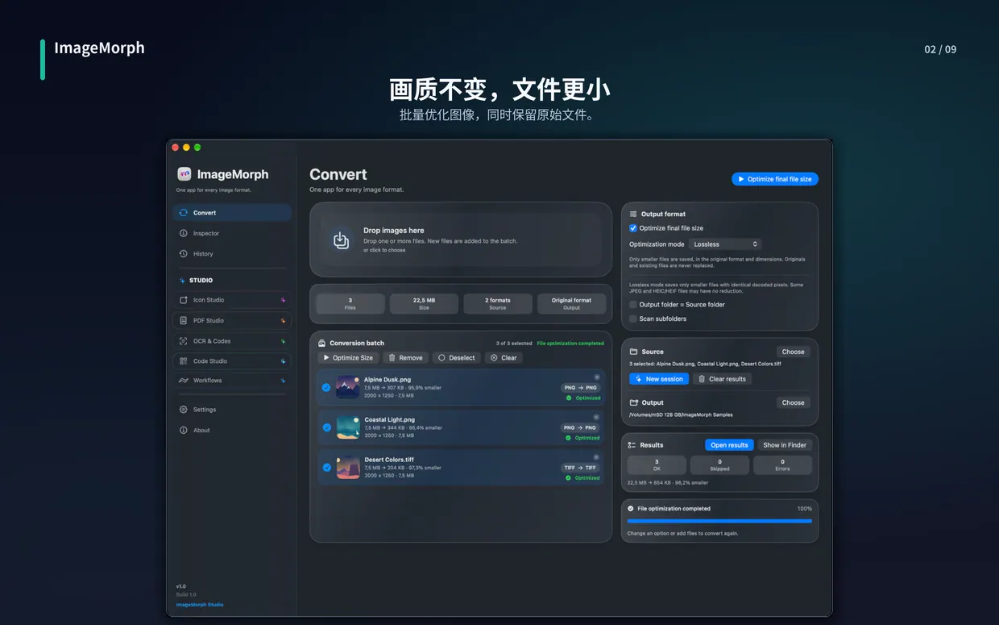
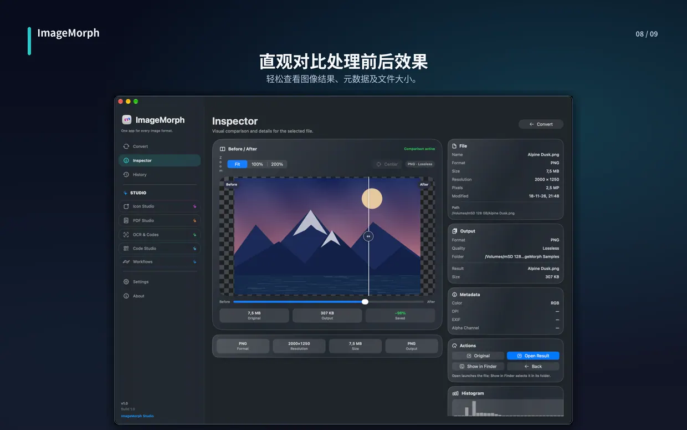
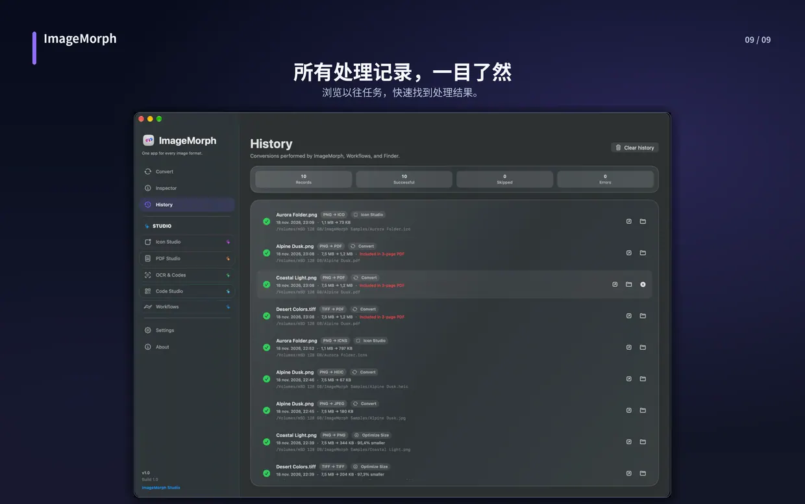
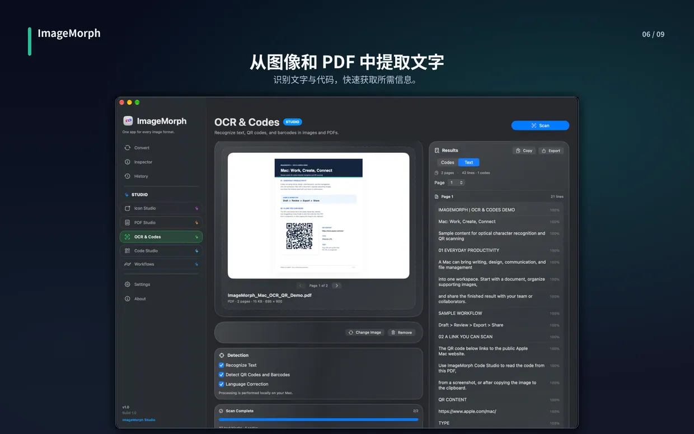
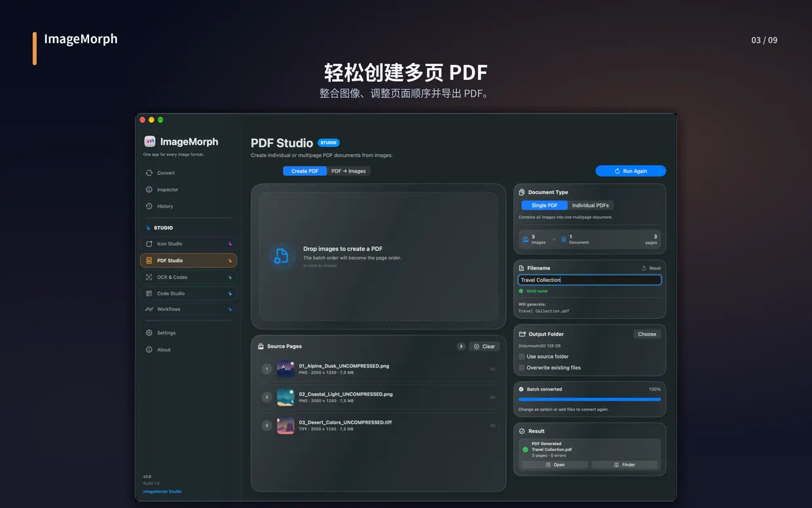
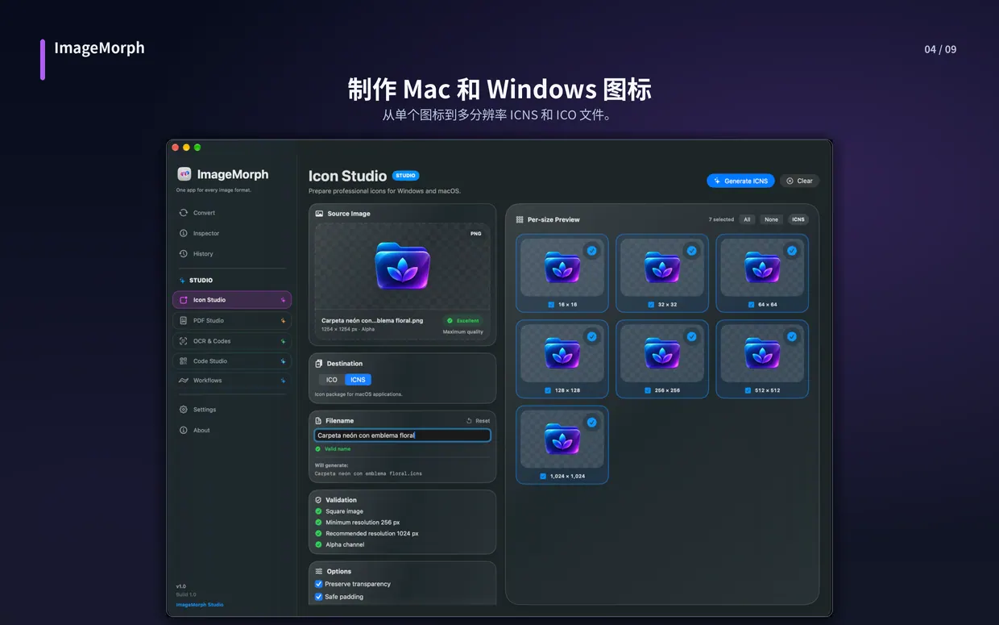
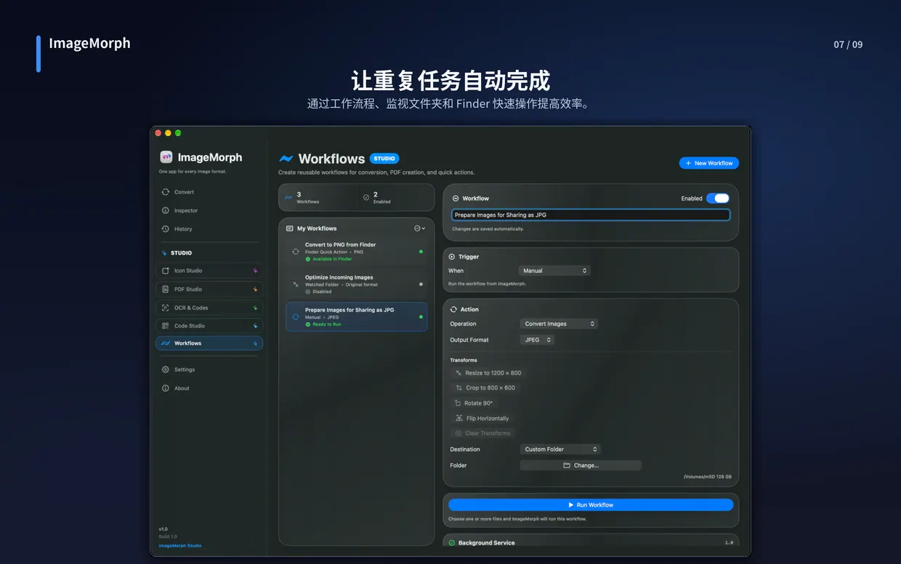

JPEG · PNG · HEIC · TIFF
逐个或批量处理JPEG、PNG、HEIC和TIFF。

在 Mac 上转换、调整大小并优化图片。创建 PDF，自动处理重复任务。
正在准备登陆 Mac App Store。

在 Mac 上转换、调整大小并优化图片。创建 PDF，自动处理重复任务。

识别图片与多页 PDF 中的文字，检查并导出结果。
在 Mac 上读取电子邮件或 PDF 中的二维码，先查看目标地址，再决定是否打开。

逐个或批量处理JPEG、PNG、HEIC和TIFF。

按需更改图像尺寸和比例，并可选择保持原始宽高比。

按格式进行无损或受支持的有损优化；仅在输出更小时创建文件。

查看格式、尺寸和元数据。转换后，还可以对比原始文件与输出结果。

查看最近操作；若输出文件仍在，可打开或在 Finder 中显示。

Studio 集合 OCR、条码识别、PDF 工具、图标制作与自动化。一次购买，无须订阅。
Studio 为可选的永久性 App 内购买项目。

识别图片与多页 PDF 中的文字，检查并导出结果。


从剪贴板、图像、PDF 或文件夹读取代码，也可使用兼容的相机和扫描仪采集。打开前先检查内容和链接。


创建多页 PDF，将页面导出为图片并调整旋转方向。

制作 ICO 与 ICNS 文件，导出前检查各种尺寸。


生成 QR、Code128、Data Matrix、EAN、PDF417、Aztec，导出 PNG 或 PDF。

保存工作流程、监控文件夹并启动 Finder 操作。

| 功能 | Free | Studio |
|---|---|---|
| 转换、调整尺寸、优化 | 包含 | 包含 |
| 队列、Inspector、对比、直方图 | 包含 | 包含 |
| 基本PDF创建 | 包含 | 包含 |
| PDF Studio与页面图像导出 | — | 包含 |
| OCR和代码识别 | — | 包含 |
| 代码生成与相机/扫描仪输入 | — | 包含 |
| ICO和ICNS图标集 | — | 包含 |
| 工作流、监视文件夹与Finder快速操作 | — | 包含 |
本地价格、Studio访问权限和试用资格均在应用中显示。购买与恢复使用Apple服务。
图片转换、优化、PDF 创建和 OCR 均在 Mac 本地完成。文件内容不会发送给 Studio 试用授权服务。访问文件、文件夹、摄像头和扫描仪需要授权；设置、历史记录、书签及包含名称、路径或错误的日志可能保存在本机。
阅读隐私政策